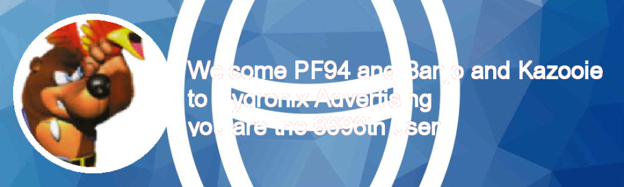
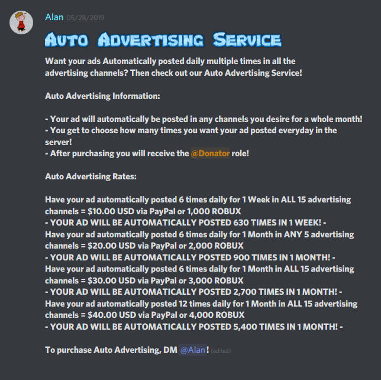

Cloud Software's discord has Partner Bot since it's beginning.
I was suspicious when I saw this pop up, A advertisement for a semi-popular discord with 8k people, It was posted in 3 AM eastern time.
It's 3 PM eastern time, I decided to join it because I was suspicious. When I joined, Mee6 advertised me at the same time welcoming me, to a invite for Partnership Paradise, Which is the same server.

Unsurprisingly, General isn't that active. It's only full of these images (like the one above welcoming me on the server) Everything is active on the advertisements. Most people on this discord are teenagers between the age of 12 to 16, according to the Introduce Yourself channel. A coincidence is that the server has Growth Tracker, which I thought was obscure when adding that same bot on Cloud Software. Also it has partner bot. Which (of course) explains the Cloud Software ad from 3 AM eastern time from that server.

A fake Mee6 also advertises a gaming channel EVERYWHERE. It's like if the gaming channel was sponsoring this Discord. It's a Discord with only 100 members and a terrible YouTube channel with 600 subs (which are possibly sub-bots, judging by the low 100 views).

Hell, that's even worse than Chaziz. If this was the newer episodes of The Simpsons. Chaziz would have been My Three Sons, and if you add me, I would have been the newer episodes of Family Guy.

Uh oh, this looks like a scam. This is no mention of "How to get robux" anywhere.
This is only a server for getting members, converting them for YouTube subs.
The "robux" thing is a non-existing gimmick.
Do not join this server.